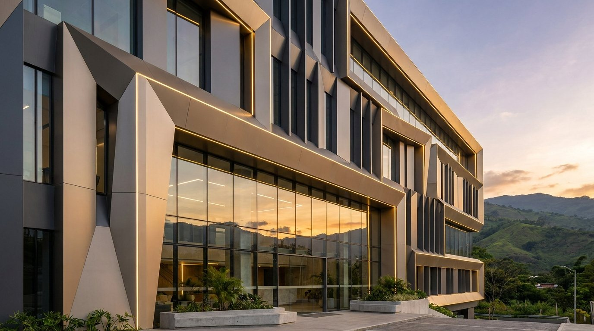
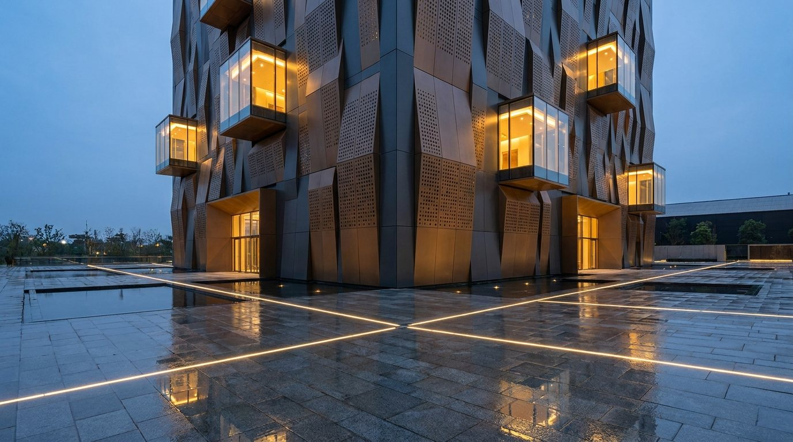
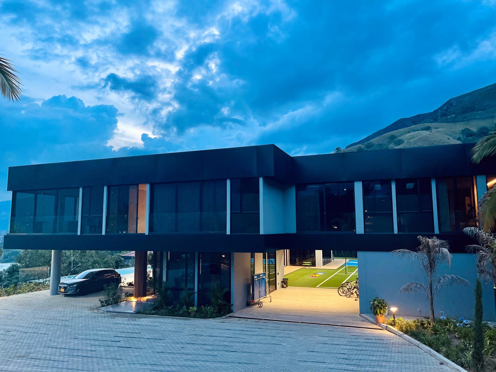
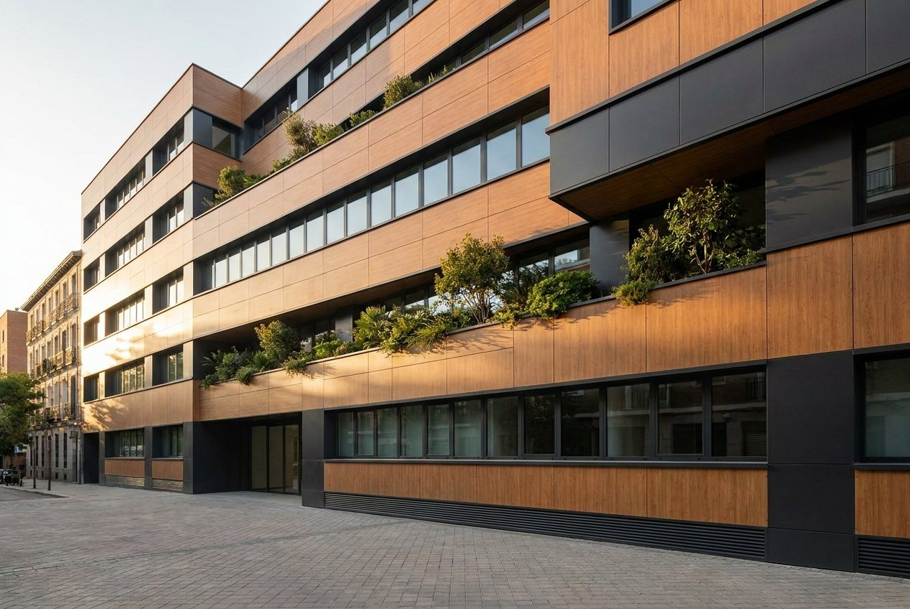
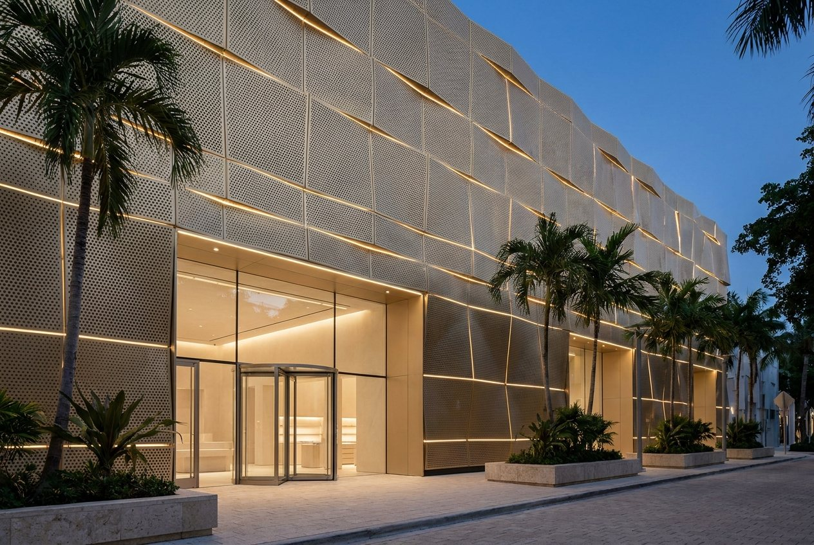
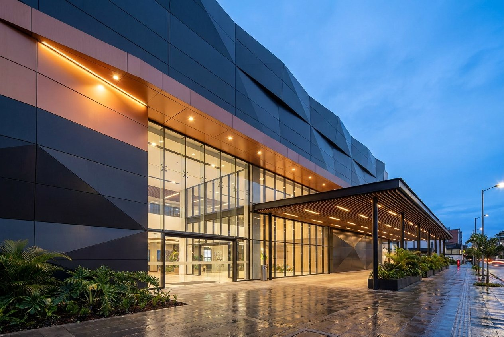
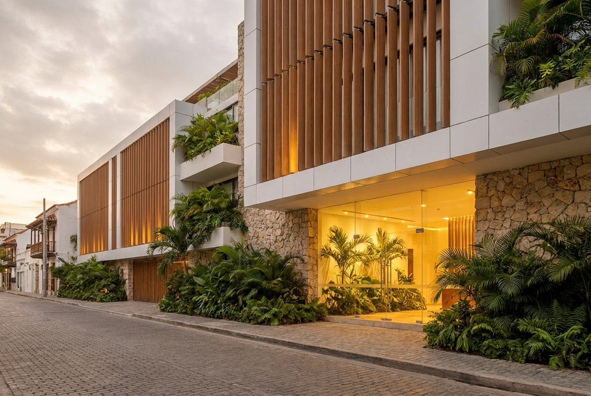
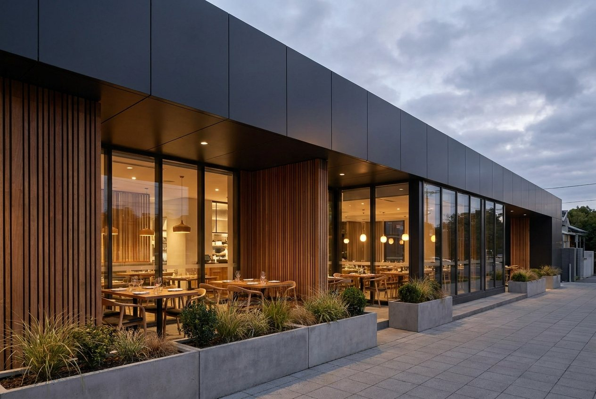
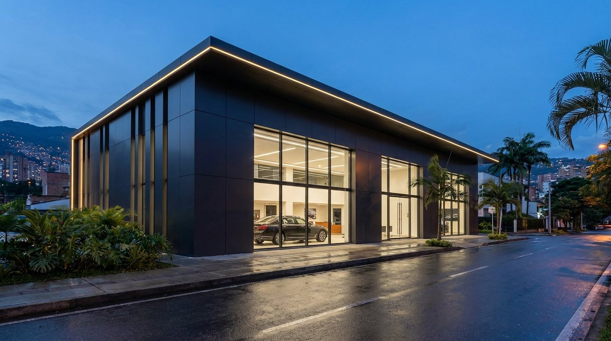
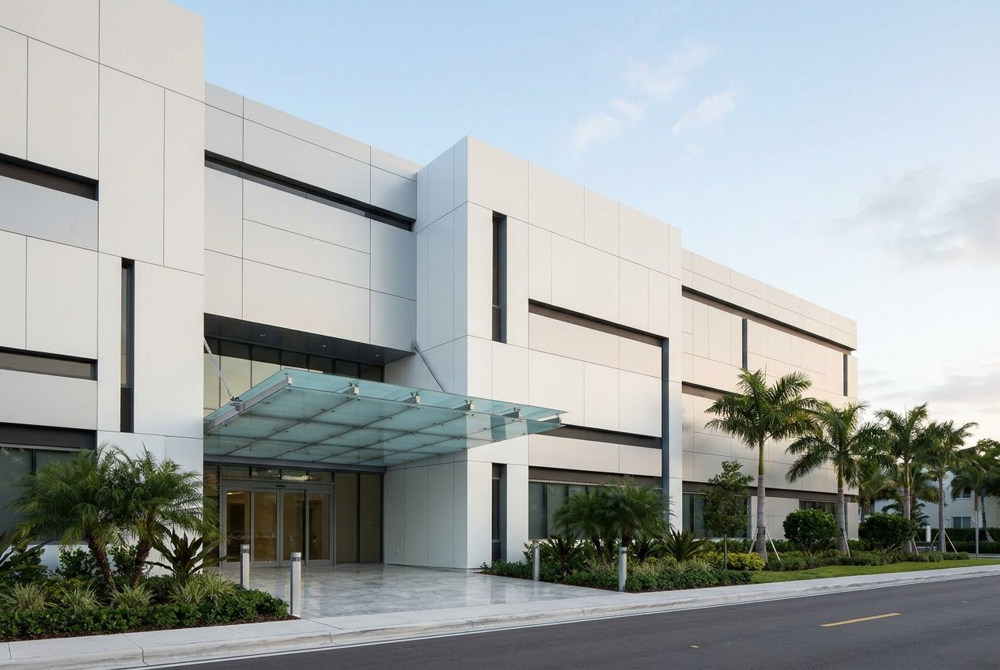

LÍNEA DE EXTERIOR · FACHADAS Y PÉRGOLAS
La fachada es la primera impresión de su marca.
Diseñamos, abastecemos y ejecutamos fachadas en aluminio compuesto, HPL y vidrio para edificios corporativos, locales comerciales y residencias de lujo. Un solo responsable, de la idea a la obra terminada.

Corporativo y comercial
Edificios de oficinas, locales, centros comerciales, hoteles, restaurantes y concesionarios, con fachadas de bajo costo de mantenimiento y un mismo estándar de obra en cada sede.
Ver fachadas corporativas →
Hogares de lujo contemporáneos
Fachadas diseñadas para el exterior: resisten el sol, el agua y el clima agresivo, con bajo costo de mantenimiento. Hogares que perduran a través del tiempo.
Ver fachadas residenciales →NUESTRO NÚCLEO
Diseñamos cada fachada, y después la construimos.
El diseño es el centro de Infinitum. Cada fachada nace de un dibujo propio: pliegues, curvas, calados y juntas pensados para el edificio y para la marca. Después la fabricamos en nuestra planta, con CNC, y la instalamos.
SISTEMAS DE FACHADA
Seis sistemas, un mismo estándar de obra.
Cada edificio pide su propio material. Elegimos el sistema según la altura, el clima, el mantenimiento y la imagen que la marca quiere proyectar a la calle.
Aluminio compuesto (ACM)
Paneles tipo Alucobond, ranurados y doblados en nuestra planta con CNC, en calibres de 3, 4 y 6 mm. Acabados mate, metálicos, color y madera.
Paneles HPL para fachada
Laminado compacto de alta presión (HPL), resistente a golpes, sol y humedad, con aspecto de madera, metal o color liso. Lo especificamos con la ficha de exterior del fabricante.
Fachada ventilada
Una fachada que respira: el panel se separa del muro con una cámara de aire. El aire asciende y se renueva, y el muro queda protegido del sol, la humedad y los cambios de temperatura.
Lámina cold rolled microperforada
Pieles de lámina microperforada que filtran la luz, dan privacidad y dejan pasar el aire. Una fachada con profundidad, que cambia con el día y con la iluminación nocturna.
Vidrio y ventanería
Vitrinas, ventanería de aluminio y fachadas completas en vidrio para locales, edificios y viviendas.
Madera tecnológica, lamas y celosías
Lamas, aleros y celosías con tableros certificados para intemperie, que dan calidez, sombra y ritmo a la fachada.
CÓMO TRABAJAMOS
Diseñamos. Abastecemos. Ejecutamos.
Un solo equipo lleva su fachada, su pérgola y su puerta desde el primer dibujo hasta la entrega. Usted recibe una propuesta con diseño, materiales, cantidades y fecha de entrega nombrada.
LO QUE LOGRAMOS
Lo que una fachada puede hacer por su edificio.
Una fachada nueva cambia la imagen, protege el muro y ordena el mantenimiento. Estas son las posibilidades que más nos piden.
Hechas para el sol, el agua y el clima agresivo
Aluminio y HPL resisten el sol intenso, la lluvia, la humedad, los golpes y la corrosión. Se limpian con agua y se reponen por piezas: un costo de mantenimiento bajo durante muchos años.
Estrene su edificio por fuera
Un revestimiento nuevo, en seco, sobre la estructura que ya tiene. Cubre el deterioro, ordena las instalaciones a la vista y actualiza la imagen sin demoler.
Una fachada que respira
El aire que circula detrás del panel disipa el calor del sol y evacúa la humedad. Con aislamiento continuo, se reducen los puentes térmicos.
Formas que un catálogo no trae
Pliegues, curvas, paneles de formas propias y juntas abiertas, cerradas o de contraste. Cada pieza se corta y se dobla a la medida del dibujo.
Luz, sombra y privacidad
La lámina microperforada y los calados filtran el sol, dan privacidad y dejan pasar la ventilación, con una luz distinta a cada hora.
Paneles planos y juntas exactas
Piezas fabricadas a medida en planta, con CNC: menos corte en obra, menos desperdicio y una superficie plana y limpia.
CORPORATIVO Y COMERCIAL
Una fachada para cada negocio.
Edificios corporativos, locales comerciales, centros comerciales, hoteles, restaurantes, concesionarios y clínicas. Cada uno pide su material, su luz y su nivel de mantenimiento.















Imágenes ilustrativas de referencia: muestran cómo se usa cada material en cada tipo de negocio. No son obras de Infinitum.
FACHADAS DE LOCALES COMERCIALES
La fachada vende antes de que el cliente entre.
En un centro comercial el local compite en tres segundos, desde el pasillo. Una fachada de vidrio templado con marco de acero negro, mural gráfico de gran formato y filetes de luz convierte la vitrina en la pieza más fuerte de la marca. La diseñamos, la fabricamos y la instalamos, con la estructura calculada desde el primer plano.


SECTOR AUTOMOTRIZ
Fachadas para concesionarios y centros de servicio.
La imagen de una marca automotriz se lee desde la calle. Resolvemos la fachada con paneles de aluminio compuesto en los colores de la marca, vidrio de piso a techo y aviso corpóreo iluminado.
Sala de exhibición
Vidrio de gran formato para mostrar el vehículo y paneles que enmarcan la marca.
Centro de servicio
Frentes de taller en panel resistente, con portones, aleros y señalización clara.
Una marca, muchas sedes
Un mismo sistema de panel, replicado en cada sede con el mismo estándar de obra.
Imágenes ilustrativas de referencia para el sector automotriz. No son obras de Infinitum.


RESIDENCIAL
Hogares de lujo contemporáneos que perduran.
Obra construida en Antioquia: fachadas en aluminio compuesto, ventanería de aluminio y vidrio de doble altura. Pensadas para el exterior, con bajo costo de mantenimiento, y fabricadas e instaladas por Infinitum.


Residencias campestres
Antioquia. Aluminio compuesto en negro mate y listones en acabado madera, sobre perfilería de aluminio, con ventanería y vidrio de doble altura.
Fachadas completas en vidrio
Vitrinas y frentes de vidrio de piso a techo para locales, restaurantes, edificios y viviendas.
Fachadas en el oriente antioqueño
Edificios y locales del Santuario, con aluminio compuesto, vidrio y paneles a la medida.
PÉRGOLAS ARQUITECTÓNICAS
Pérgolas que extienden la fachada.
Estructuras de aluminio, aluminio compuesto y lamas de madera tecnológica que dan sombra y protegen de la lluvia en terrazas, restaurantes y accesos. Se diseñan junto con la fachada, para que las dos se lean como una sola pieza.


Imágenes ilustrativas de referencia. No son obras de Infinitum.
Aluminio o acero
Columnas y vigas calculadas por luz y por carga. Perfilería de aluminio extruido o de acero con acabado de exterior.
Lamas, vidrio o panel
Lamas fijas u orientables de aluminio o de madera plástica (WPC), vidrio laminado o panel de aluminio compuesto, según la sombra y la lluvia que pida el espacio.
Peso de referencia de la cubierta
Lamas de aluminio de 8 a 12 kg/m², lamas huecas de madera plástica de 10 a 18 kg/m² y vidrio laminado 8+8 de unos 40 kg/m². El cálculo final se hace con el proyecto.
Canal integrado
El agua de lluvia se recoge en un canal dentro de la viga y baja por el interior de la columna.
Iluminación integrada
Líneas LED dentro de las lamas y los perfiles, para que la pérgola se lea de noche como parte de la fachada.
Placas, viento y sismo
Placas ancladas a la losa o al cimiento. El viento y el sismo se incluyen en el cálculo del proyecto.
EXPERIENCIA
21 años construyendo, y muchas fachadas en pie.
Fabricamos las piezas en nuestra planta, con CNC, y las instalamos con cuadrillas especializadas. Hemos resuelto fachadas de viviendas, locales, edificios, hoteles y restaurantes, en aluminio compuesto, vidrio y otros materiales.
MATERIALES
Fabricantes de referencia del mercado.
Aluminio compuesto: Alucobond (3A Composites). HPL para fachada: Lamitech, fabricante colombiano con planta en Cartagena, además de Formica, Trespa y Fundermax Max Exterior. Madera tecnológica: tableros con ficha de exterior de Arauco, Tablemac, Pizano, Duratex y Eucatex.
Cada proyecto lleva la ficha técnica del fabricante, su clasificación de fuego y la validación del ingeniero responsable antes de fabricar.
PREGUNTAS FRECUENTES
Lo que preguntan arquitectos y desarrolladores.
¿Se puede renovar la fachada de un edificio que ya existe?
Sí. Se instala un revestimiento en seco sobre una subestructura de aluminio anclada al muro existente. Antes se revisa el estado del soporte, y la clasificación de fuego del panel se valida con el ingeniero responsable.
¿Qué es una fachada ventilada?
Es un revestimiento separado del muro por una cámara de aire. El sol calienta el panel, el aire sube y se renueva, y el muro queda protegido de la radiación y la humedad.
¿Cuándo conviene el aluminio compuesto y cuándo el HPL?
El aluminio compuesto es liviano y se ranura y dobla en planta, por eso resuelve volúmenes, aleros y remates continuos. El HPL es una lámina compacta y rígida, resistente al impacto, con aspecto de madera, piedra o color. Elegimos según altura, clima y mantenimiento.
¿Sirve el MDF o el MDP para una fachada?
El MDF y el MDP comunes van en interior. Para exterior usamos tableros con ficha técnica de intemperie del fabricante y los protegemos con alero y remates.
¿Qué recibe el cliente en una propuesta de fachada?
Diseño, materiales con su ficha técnica, cantidades, sistema de fijación y una fecha de entrega nombrada. La clasificación de fuego y la validación del ingeniero responsable se anexan antes de fabricar.
¿Dónde trabajan?
Desde Medellín atendemos Colombia, y desde Miami el sur de la Florida. Cada mercado tiene su propia norma y la aplicamos proyecto por proyecto.